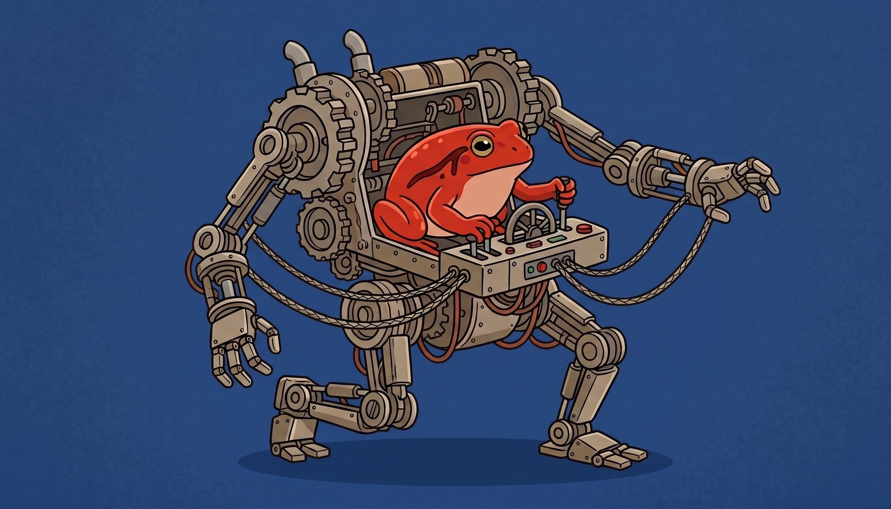

The Pond #10: Dataharvest and vibes 🪷
Also: come learn about maps! Now for real.
by Ada Homolova · June 2, 2026

Hello my dear frosches! 🐸
Dataharvest 2026 just wrapped, and the Pond suddenly feels a bit more snug. A warm welcome to everyone who found us there!
The slides from both our workshops are up to review whenever you like: Code anything and Text embeddings.
We also got our faces cartooned there (the robot was there too I swear 🤞)

We have two live sessions for you this month, then the Pond takes a summer break 🌞
Read all about it below.
Happening at The Pond
Join us at two training sessions this month:
🤖 How to code anything will be a re-run of our Dataharvest session. A simple, systematic way to instruct an LLM, manage context and catch its mistakes. No coding background needed. Tue 16 June, 15:00 CET (direct link)
🗺️ Landscapes of data: a deep dive into maps is our second June session. Jonathan and I look at what works when you put data on a map and what to watch for, with a long stop at QGIS and its famously steep learning curve. Wed 24 June, 14:30 CEST (direct link)
☕ Community hangouts: Need help, want to bounce an idea around, or just miss coffee-machine chats? Drop in for 45 minutes. No agenda, come and go as you like. Mon 8 June, 16:30 CET (direct link)
Mentorships
Want to level up your data skills with 1:1 personal attention and hands-on guidance? Book one, two, three or four 1:1 sessions with me and we can build each session around whatever you're working on.
What We're Reading
🫘 An ode to beans is my new data-driven essay exploring just how much plant-based protein is better for the environment. Including recipes!
😎 Did you miss Dataharvest? No worries. Grab the materials of the data sessions from the official schedule session descriptions.
🛠️ I vibe-coded a complex data visualization dashboard is an write-up of building a real analysis dashboard mostly by prompting claude.
🔌 LLMs running on my laptop can drive coding agents now is about how Qwen 3.5 and Gemma 4 finally made local models good enough to power a coding agent.
🎧 The Sonification Awards 2025/26 winners are out, for when you'd rather hear your data than look at it.
🌲 Forest data jam turns live readings from environmental sensors in the Hubbard Brook valley into a playground. Datasets included!
🗃️ UNISHKA's Substack is a growing archive of local and national databases from countries around the world — bookmark it for the next time you go data-hunting abroad.
Do you enjoy this newsletter? Join The Pond on Discord and let me know!
With 💚 and 🐸,
Ada